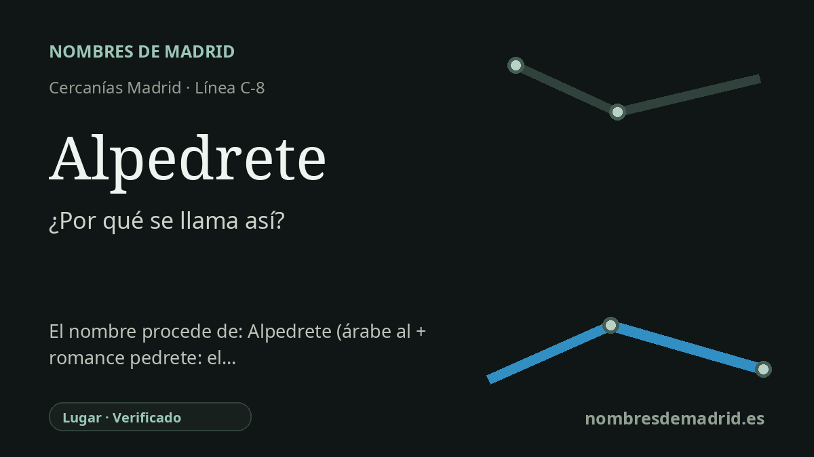

Publicado el · Investigación de Nombres de Madrid · Cómo verificamos cada origen · 6 fuentes consultadas
Respuesta rápida
La estación de Alpedrete toma su nombre del municipio al que sirve. El topónimo se explica mejor como una forma arabizada del latín tardío *PĔTRĒTU, 'lugar de piedras' o 'cantera', muy adecuado para una villa históricamente ligada al granito.
La historia del nombre
La estación de Alpedrete recibe el nombre del municipio de Alpedrete, situado en el entorno de la Sierra de Guadarrama, en la Comunidad de Madrid. El nombre ferroviario es, por tanto, un topónimo: Adif identifica actualmente la estación como Alpedrete, mientras que el Ayuntamiento usa también en noticias recientes las formas Mataespesa o Mataespesa de Alpedrete, por el ámbito local en el que se sitúa la vía.
La fuente etimológica más sólida es Toponomasticon Hispaniae. Su entrada interpreta Alpedrete como una forma arabizada, con el artículo árabe al-, del latín tardío PĔTRĒTU, palabra formada sobre PĔTRA, 'piedra', mediante un sufijo colectivo o abundancial. Dicho de forma sencilla, el nombre apunta a un 'lugar de piedras', un 'pedregal' o una 'cantera'.
Ese significado encaja con el paisaje y con la economía histórica de la localidad. Alpedrete ha sido conocido durante mucho tiempo por sus canteras de granito, y la web municipal lo presenta como un municipio nacido de la piedra. Los materiales del Ayuntamiento vinculan su granito con grandes obras de Madrid y su entorno, como El Escorial, el Palacio Real y otros monumentos, y un folleto turístico municipal afirma que la piedra fue tan importante para la vida local que incluso dio nombre al pueblo.
El nombre de la estación conserva una historia documental amplia. Toponomasticon Hispaniae cita formas como 'El Alpedrete' hacia 1539, 'Villalba y Alpedrete' en 1591 y referencias posteriores de 1605, 1737, 1751, 1829, 1845 y 1861. La misma fuente recuerda que Alpedrete fue en otro tiempo barrio de Collado Villalba y que su segregación se remonta a 1840; el folleto municipal menciona además el villazgo de 1630 y la independencia respecto de Collado Villalba en 1840.
Existen tradiciones locales que cuentan el origen de otra manera. El Ayuntamiento recoge una teoría según la cual los romanos llamaron al lugar Ad Petrum y otra en la que los árabes lo habrían denominado Al Pedrete por la abundancia de canteras. Esas tradiciones mantienen la misma idea central, la piedra, pero la lectura lingüística más fiable es la más técnica: una forma arabizada de un nombre latino tardío o romance relacionado con la piedra. No consta una fecha exacta para la adopción del nombre público actual Alpedrete por la estación, y Mataespesa sigue siendo relevante como denominación alternativa o local de la estación.